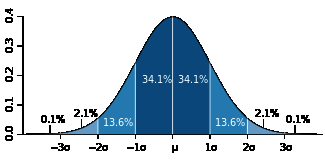

在前一篇文章中，我们了解了LogLog Counting。LLC算法的空间复杂度为$O(log_2(log_2(N_{max})))$，并且具有较高的精度，因此非常适合用于大数据场景的基数估计。不过LLC也有自己的问题，就是当基数不太大时，估计值的误差会比较大。这主要是因为当基数不太大时，可能存在一些空桶，这些空桶的ρmax为0。由于LLC的估计值依赖于各桶ρmax的几何平均数，而几何平均数对于特殊值（这里就是指0）非常敏感，因此当存在一些空桶时，LLC的估计效果就变得较差。
这一篇文章中将要介绍的HyperLogLog Counting及Adaptive Counting算法均是对LLC算法的改进，可以有效克服LLC对于较小基数估计效果差的缺点。
评价基数估计算法的精度
首先我们来分析一下LLC的问题。一般来说LLC最大问题在于当基数不太大时，估计效果比较差。上文说过，LLC的渐近标准误差为$1.30/\sqrt{m}$，看起来貌似只和分桶数m有关，那么为什么基数的大小也会导致效果变差呢？这就需要重点研究一下如何评价基数估计算法的精度，以及“渐近标准误差”的意义是什么。
标准误差
首先需要明确标准误差的意义。例如标准误差为0.02，到底表示什么意义。
标准误差是针对一个统计量（或估计量）而言。在分析基数估计算法的精度时，我们关心的统计量是$\hat{n}/n$。注意这个量分子分母均为一组抽样的统计量。下面正式描述一下这个问题。
设S是我们要估计基数的可重复有限集合。S中每个元素都是来自值服从均匀分布的样本空间的一个独立随机抽样样本。这个集合共有C个元素，但其基数不一定是C，因为其中可能存在重复元素。
设$f_n$为定义在S上的函数：
$$f_n(S) = Cardinality\;of\;S$$
同时定义$f_\hat{n}$ 也是定义在S上的函数：
$$f_\hat{n}(S)=LogLog\;estimate\;value\;of\;S$$
我们想得到的第一个函数值，但是由于第一个函数值不好计算，所以我们计算同样集合的第二个函数值来作为第一个函数值得估计。因此最理想的情况是对于任意一个集合两个函数值是相等的，如果这样估计就是100%准确了。不过显然没有这么好的事，因此我们退而求其次，只希望$f_\hat{n}(S)$是一个无偏估计，即：
$$E(\frac{f_\hat{n}(S)}{f_n(S)})=1$$
这个在上一篇文章中已经说明了。同时也可以看到，$\frac{f_\hat{n}(S)}{f_n(S)}$实际上是一个随机变量，并且服从正态分布。对于正态分布随机变量，一般可以通过标准差$\sigma$度量其稳定性，直观来看，标准差越小，则整体分布越趋近于均值，所以估计效果就越好。这是定性的，那么定量来看标准误差$\sigma$到底表达了什么意思呢。它的意义是这样的：
对于无偏正态分布而言，随机变量的一次随机取值落在均值一个标准差范围内的概率是68.2%，而落在两个和三个标准差范围内的概率分别为95.4%和99.6%，如下图所示（图片来自维基百科）：

因此，假设标准误差是0.02（2%），它实际的意义是：假设真实基数为n，n与估计值之比落入(0.98, 1.02)的概率是68.2%，落入(0.96, 1.04)的概率是95.4%，落入(0.94, 1.06)的概率是99.6%。显然这个比值越大则估计值越不准，因此对于0.02的标准误差，这个比值大于1.06或小于0.94的概率不到0.004。
再直观一点，假设真实基数为10000，则一次估计值有99.6%的可能不大于10600且不小于9400。
组合计数与渐近分析
如果LLC能够做到绝对服从1.30/m−−√，那么也算很好了，因为我们只要通过控制分桶数m就可以得到一个一致的标准误差。这里的一致是指标准误差与基数无关。不幸的是并不是这样，上面已经说过，这是一个“渐近”标注误差。下面解释一下什么叫渐近。
在计算数学中，有一个非常有用的分支就是组合计数。组合计数简单来说就是分析自然数的组合函数随着自然数的增长而增长的量级。可能很多人已经意识到这个听起来很像算法复杂度分析。没错，算法复杂度分析就是组合计数在算法领域的应用。
举个例子，设A是一个有n个元素的集合（这里A是严格的集合，不存在重复元素），则A的幂集（即由A的所有子集组成的集合）有2n个元素。
上述关于幂集的组合计数是一个非常整齐一致的组合计数，也就是不管n多大，A的幂集总有2n个元素。
可惜的是现实中一般的组合计数都不存在如此干净一致的解。LLC的偏差和标准差其实都是组合函数，但是论文中已经分析出，LLC的偏差和标准差都是渐近组合计数，也就是说，随着n趋向于无穷大，标准差趋向于1.30/m−−√，而不是说n多大时其值都一致为1.30/m−−√。另外，其无偏性也是渐近的，只有当n远远大于m时，其估计值才近似无偏。因此当n不太大时，LLC的效果并不好。
庆幸的是，同样通过统计分析方法，我们可以得到n具体小到什么程度我们就不可忍受了，另外就是当n太小时可不可以用别的估计方法替代LLC来弥补LLC这个缺陷。HyperLogLog Counting及Adaptive Counting都是基于这个思想实现的。
Adaptive Counting
Adaptive Counting（简称AC）在“Fast and accurate traffic matrix measurement using adaptive cardinality counting”一文中被提出。其思想也非常简单直观：实际上AC只是简单将LC和LLC组合使用，根据基数量级决定是使用LC还是LLC。具体是通过分析两者的标准差，给出一个阈值，根据阈值选择使用哪种估计。
基本算法
如果分析一下LC和LLC的存储结构，可以发现两者是兼容的，区别仅仅在于LLC关心每个桶的ρmax，而LC仅关心此桶是否为空。因此只要简单认为ρmax值不为0的桶为非空，0为空就可以使用LLC的数据结构做LC估计了。
而我们已经知道，LC在基数不太大时效果好，基数太大时会失效；LLC恰好相反，因此两者有很好的互补性。
回顾一下，LC的标准误差为：
SElc(n^/n)=et−t−1−−−−−−−−√/(tm−−√)
LLC的标准误差为：
SEllc(n^/n)=1.30/m−−√
将两个公式联立：
et−t−1−−−−−−−−√/(tm−−√)=1.30/m−−√
解得t≈2.89。注意m被消掉了，说明这个阈值与m无关。其中t=n/m。
设β为空桶率，根据LC的估算公式，带入上式可得：
β=e−t≈0.051
因此可以知道，当空桶率大于0.051时，LC的标准误差较小，而当小于0.051时，LLC的标准误差较小。
完整的AC算法如下：
n^={αmm21m∑M−mlog(β)ifif0≤β<0.0510.051≤β≤1
误差分析
因为AC只是LC和LLC的简单组合，所以误差分析可以依照LC和LLC进行。值得注意的是，当β<0.051时，LLC最大的偏差不超过0.17%，因此可以近似认为是无偏的。
HyperLogLog Counting
HyperLogLog Counting（以下简称HLLC）的基本思想也是在LLC的基础上做改进，不过相对于AC来说改进的比较多，所以相对也要复杂一些。本文不做具体细节分析，具体细节请参考“HyperLogLog: the analysis of a near-optimal cardinality estimation algorithm”这篇论文。
基本算法
HLLC的第一个改进是使用调和平均数替代几何平均数。注意LLC是对各个桶取算数平均数，而算数平均数最终被应用到2的指数上，所以总体来看LLC取得是几何平均数。由于几何平均数对于离群值（例如这里的0）特别敏感，因此当存在离群值时，LLC的偏差就会很大，这也从另一个角度解释了为什么n不太大时LLC的效果不太好。这是因为n较小时，可能存在较多空桶，而这些特殊的离群值强烈干扰了几何平均数的稳定性。
因此，HLLC使用调和平均数来代替几何平均数，调和平均数的定义如下：
H=n1x1+1x2+…+1xn=n∑ni=11xi
调和平均数可以有效抵抗离群值的扰动。使用调和平均数代替几何平均数后，估计公式变为如下：
n^=αmm2∑2−M
其中：
αm=(m∫∞0(log2(2+u1+u))mdu)−1
偏差分析
根据论文中的分析结论，与LLC一样HLLC是渐近无偏估计，且其渐近标准差为：
SEhllc(n^/n)=1.04/m−−√
因此在存储空间相同的情况下，HLLC比LLC具有更高的精度。例如，对于分桶数m为2^13（8k字节）时，LLC的标准误差为1.4%，而HLLC为1.1%。
分段偏差修正
在HLLC的论文中，作者在实现建议部分还给出了在n相对于m较小或较大时的偏差修正方案。具体来说，设E为估计值：
当E≤52m时，使用LC进行估计。
当52m<E≤130232是，使用上面给出的HLLC公式进行估计。
当E>130232时，估计公式如为n^=−232log(1−E/232)。
关于分段偏差修正效果分析也可以在原论文中找到。
小结
本文首先介绍了基数估计算法标准误差的意义，并据此说明了为什么LLC在基数较小时效果不好。然后，以此介绍了两种对LLC的改进算法：HyperLogLog Counting及Adaptive Counting。到此为止，常见的四种基数估计算法就介绍完了。